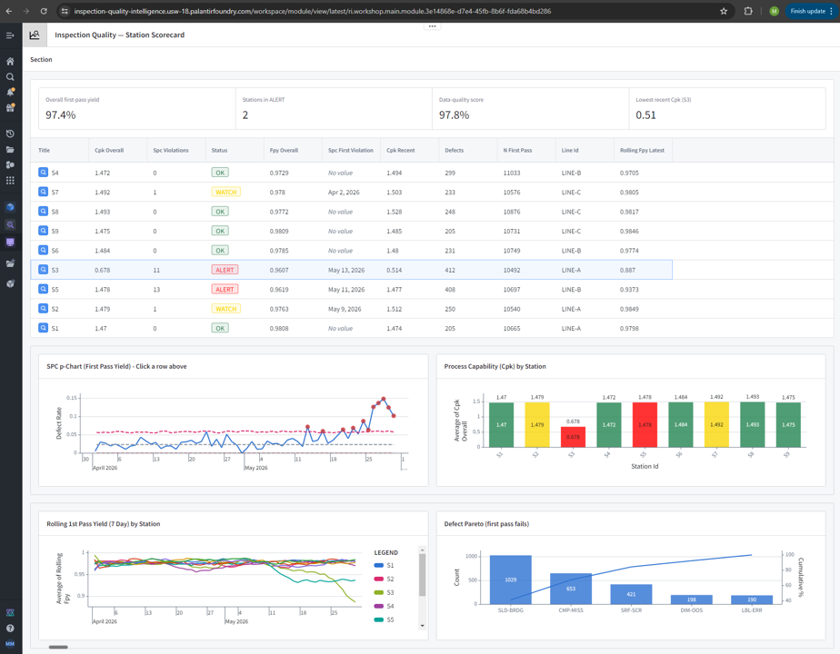
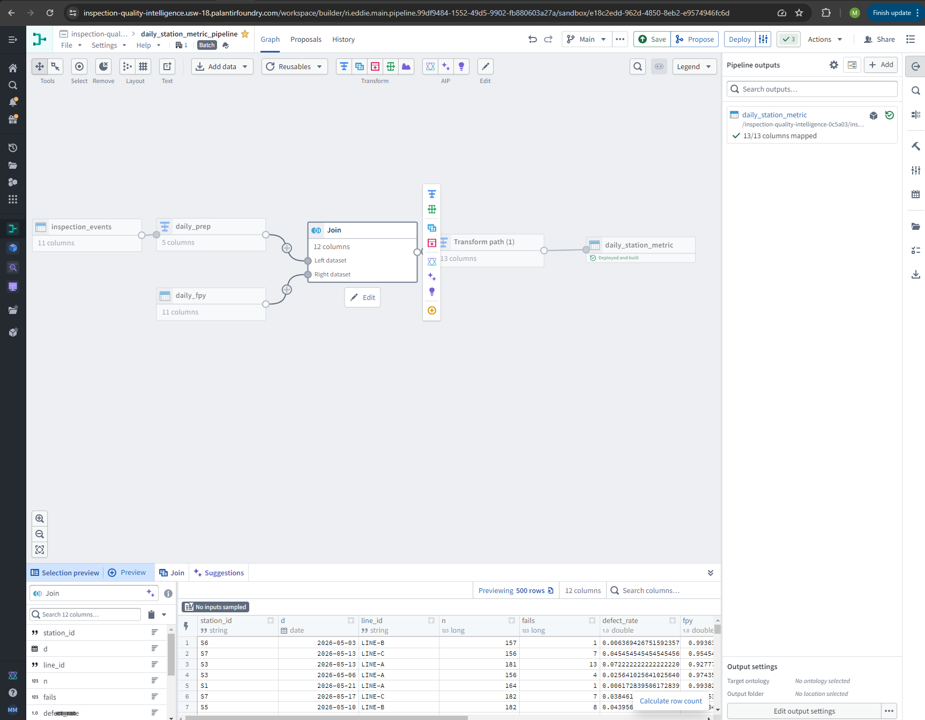

Manufacturing quality data platform over automated vision-inspection data
Part PN-1000 rev C · Sensor-Bracket Assembly · 3 lines, 9 stations, 60 days ·
synthetic demonstration data
DatabricksYield, SPC and capability figures on these pages render from
Databricks Delta output (quality.daily_fpy,
quality.station_scorecard), produced by a PySpark lakehouse pipeline
and verified cell-for-cell against a tested pandas reference implementation.
Validates before it measures. A machine-readable control plan drives the
data-quality gate — required fields, unique keys, physical ranges, result/defect-code
consistency. 2,144 of 98,401 events are caught before they reach any metric.
Two failure modes, two methods. Station S3 drifts dimensionally and its Cpk
collapses to 0.51. Station S5's capability stays healthy at 1.478 — only the p-chart
catches it, with 13 out-of-control points. That contrast is the point of the demo.
Frozen-baseline SPC. Control limits are fixed on an in-control baseline
(first 21 subgroups per station) rather than the whole window, so a sustained shift
cannot inflate its own limits and hide itself.
Deterministic triage. Classification is rule-based SPC/RCCA logic. The
language model only writes the narrative afterward — it never makes the call.
Joins four systems that share no key. ERP thinks in work-order date ranges,
MES in shifts, QMS in its own serial format and defect taxonomy, the stations in
events. A range join, an interval join and a normalized-key join reconcile them —
and every row that fails to join is reported, never dropped.
Where the logic runs
Databricks — PySpark job executed on Free Edition, writing Delta tables.
Its output drives these pages.
Palantir Foundry — a live slice: Pipeline Builder pipeline, a two-object
ontology linked one-to-many, and a Workshop scorecard app. Two of the three are
shown below.

Workshop scorecard app. The same figures these pages carry, rendered
in Foundry — 97.4% overall first pass yield, two stations in ALERT, and the contrast
the demo is built around: S3 collapsed to 0.514 recent Cpk on 11 SPC violations, while
S5 stays capable at 1.478 and is flagged anyway on 13.

Pipeline Builder.inspection_events,
daily_prep and daily_fpy joined and transformed into
daily_station_metric — deployed and built, 13 of 13 columns
mapped.
Snowflake — SQL written for portability. Not executed.
Local — the tested pandas reference implementation, 93 passing tests in CI,
including cell-for-cell SQL/Python parity on the cross-system joins.
This platform validates inspection results against a control plan —
it is not a computer-vision or image-processing system. All data is synthetic, generated
from a fixed seed so every run reproduces exactly.
Source on GitHub →